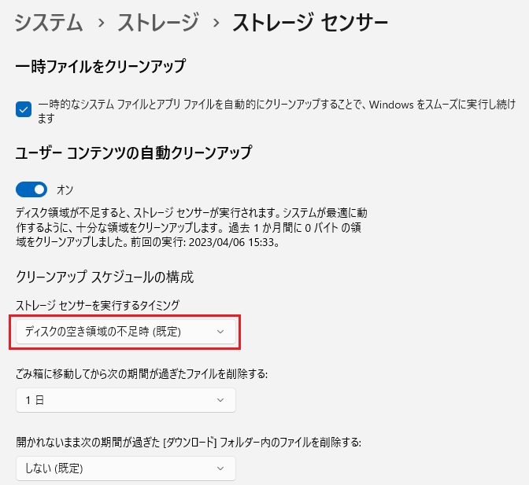
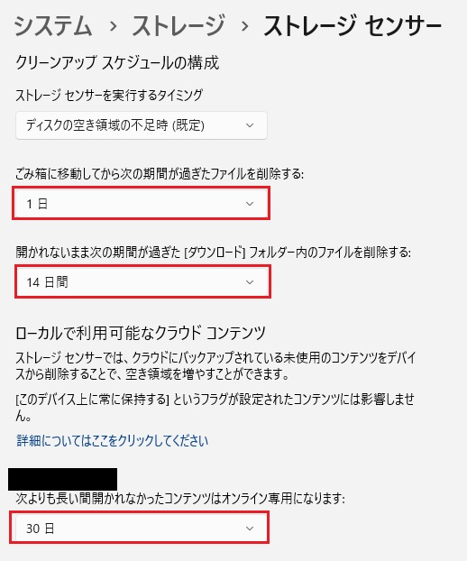
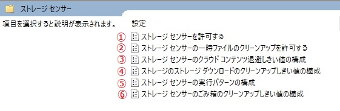
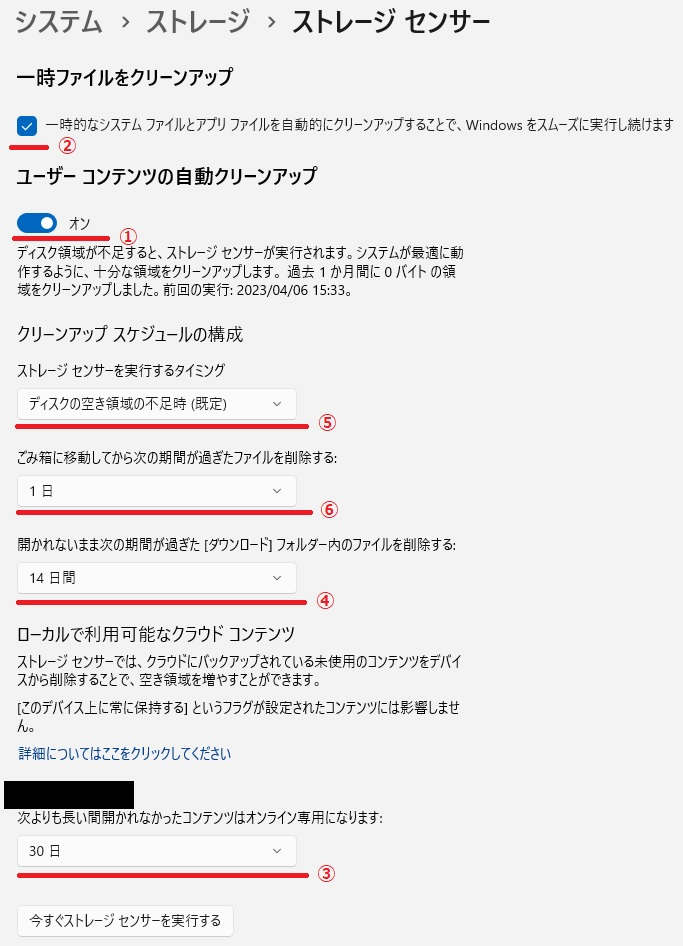

本記事は、マイクロソフト社員によって公開されております。
こんにちは、Windows サポートチームの三浦です。
本日はストレージ センサーの動作トリガーや削除条件について紹介させていただきます。
ストレージ センサーについて
ストレージ センサー (Storage Sense) は Windows 10 バージョン 1703 から搭載された機能で、一定期間利用されていない一時ファイルやダウンロード フォルダー内のファイル、および、ごみ箱内のファイルなどのクリーンアップを実行する機能です。
本機能の概要は、Storage Sense を使用してドライブ領域を管理する をご参照ください。
ストレージ センサーの対象ドライブについて
ストレージ センサーによるクリーンアップ処理の対象はシステム ドライブ内のファイルに限定されており、システム ドライブ以外のドライブ内のファイルは処理の対象外となります。
そのため、例えば、ダウンロード フォルダーを E ドライブ配下に変更している環境では、ダウンロード フォルダーのクリーンアップは実行されませんのでご留意ください。
また、同様に、ごみ箱のクリーンアップについても、システム ドライブからごみ箱に移動したファイルのみがクリーンアップの対象となります。(例えば、E ドライブからごみ箱に移動したファイルはクリーンアップの対象にはなりません。)
動作トリガーについて
ストレージ センサーでは、”クリーンアップ スケジュールの構成” 画面から下記 4 種類の実行スケジュールを指定することが可能です。
・ディスクの空き領域の不足時 (既定)
・毎日
・毎週
・毎月

ストレージ センサーが有効な環境では、上記実行スケジュールの実行条件を満たすかどうかのチェックが 10 分間隔で行われ、実行条件を満たした場合にストレージ センサーによるクリーンアップが実行される仕組みとなっております。
具体的なチェック内容については、”ディスクの空き領域の不足時 (既定)” を指定している場合とそうでない場合で異なります。
// “ディスクの空き領域の不足時 (既定)” を指定している場合
ユーザー ログオン後、10 分間隔でシステム ドライブの空き容量のチェックが行われ、空き容量が不足している場合にストレージ センサーが実行されます。
// “毎日” “毎週” “毎月” を指定している場合
ユーザー ログオン後、10 分間隔で前回のストレージ センサーの実行日時のチェックが行われ、実行スケジュールで指定している期間が経過している場合にストレージ センサーが実行されます。
例えば、実行スケジュールを “毎日” に指定している場合は、前回のストレージ センサーの実行時刻から 24 時間が経過している場合にストレージ センサーによるクリーンアップ処理が実行されます。
なお、実行条件を満たすかどうかのチェックはユーザーがログオンしている場合にのみ実行されます。ユーザーがログオンしていない場合は、チェック処理自体が実行されず、ストレージセンサーも動作いたしません。
削除条件について
ストレージ センサーでは、”クリーンアップ スケジュールの構成” から、各ファイルを削除するまでの期間を指定することが可能です。(一時ファイルを除く)

また、指定した期間を経過したかどうかの判定条件は、それぞれ以下となります。
// 一時ファイル
“アクセス日時” または “更新日時” が 7 日以上経過している一時ファイルが削除されます。(一時ファイルを削除するまでの期間は 7 日間で固定です。)
// ごみ箱内のファイル
“削除日時” から指定した期間が経過しているファイルが削除されます。(システム ドライブからごみ箱に移動したファイルのみがクリーンアップの対象となりますのでご留意ください。)
// ダウンロード フォルダー内のファイル
“アクセス日時” と “更新日時” から指定した期間が経過しているファイルが削除されます。
// クラウド コンテンツ
“アクセス日時” と “更新日時” から指定した期間が経過しているファイルがオンライン専用となります。
上記の通り、ごみ箱内のファイル以外の各ファイルは “アクセス日時” が削除条件に利用されておりますので、これらのファイルへのアクセスが頻繁に発生するような環境では、削除条件が一向に満たされず、クリーンアップ処理が意図通りに実行されない場合がございます。
このような事象が発生した場合は、こちら の回避策の利用をご検討ください。
ストレージ センサーの自動有効化について
ストレージ センサーは既定で無効となっておりますが、システム ドライブの空き容量が枯渇した際に自動的に有効化される機能が実装されております。
この自動有効化は、下記のレジストリを作成することで防ぐことが可能でございますので、意図せずストレージ センサーが有効化されてしまうことを抑止したい場合は、レジストリの作成をご検討ください。
// レジストリ情報
キー : HKEY_CURRENT_USER\Software\Microsoft\Windows\CurrentVersion\StorageSense\Parameters\StoragePolicy
名前 : OptinToastFired
種類 : REG_DWORD
データ : 1
複数のクライアントに対する一括設定について
ストレージ センサーの各種設定は、下記の管理用テンプレートを利用して、グループ ポリシーで複数のクライアント端末に対する設定を制御することが可能です。
// 対象のポリシー
[コンピューターの構成]
[管理用テンプレート]
[システム]
[ストレージ センサー]
// 各ポリシーと設定値の対応付け


※ ストレージ センサーの UI は OS バージョンにより異なる場合がございます。上記ストレージ センサーの設定画面例は Windows 11 22H2 の UI となります。
なお、ストレージ センサー用の管理用テンプレートが既定で用意されている OS は、Windows 10 1903 以降、および、Windows 11、Windows Server 2022 であり、その他の OS には既定ではテンプレートがございません。
もし、Windows Server 2019 のドメイン コントローラーなどでストレージ センサーのポリシーを管理されたい場合は、こちら から “管理用テンプレート (.admx) (Windows 10 May 2019 Update (1903) 用)” 以降の admx ファイルをダウンロードし、管理用テンプレートの更新をご実施いただきますようお願いいたします。
管理用テンプレートの更新方法等に関しては、管理用テンプレートの更新 をご参照ください。
意図通りにファイルが削除されない場合
ストレージ センサーで意図通りにファイルが削除されない場合は、下記の点をご確認ください。
// 対象ファイルがシステム ドライブ配下のファイルであるか
ストレージ センサーの対象ドライブについて にも記載の通り、クリーンアップ対象のファイルはシステム ドライブ配下のファイルに限られ、データ ドライブのファイルはクリーンアップの対象にはなりません。(ごみ箱のクリーンアップについても、システム ドライブからごみ箱に移動したファイルのみがクリーンアップの対象となります。)
// ユーザーがログオンしているか
ストレージ センサーの設定はユーザーごとに保持され、ユーザーがログオンしている間にのみ実行されます。そのため、対象ユーザーがログアウトしている場合はストレージ センサーが動作せず、クリーンアップも実行されません。
// 削除条件を満たしているか
削除条件について にも記載の通り、一時ファイル、ダウンロード フォルダー内のファイル、クラウド コンテンツに関しては、”アクセス日時” や “更新日時” を削除条件の判定に利用します。
ファイルのアクセス日時や更新日時は下記の PowerShell コマンドで確認が可能でございますので、削除が行われないファイルが存在する場合は、必要に応じて該当ファイルのアクセス日時などをチェックし、削除条件を満たしているかご確認ください。
1 | Get-ChildItem "<File Path>" | select LastAccessTime,LastWriteTime |
また、意図せずアクセス日時が更新されているような場合は、こちら の記事を参考に、回避策の利用をご検討ください。
// 別のプロセスがファイルをオープンしていないか
別のプロセスがファイルを排他的にオープンしている場合、削除処理が失敗し、ファイルが残存する場合がございます。
削除条件を満たしているにもかかわらず一部のファイルが削除されないような場合は、このシナリオに該当している可能性が考えられるため、ファイルをオープンしているプロセスの特定方法について を参考に、対象ファイルをオープンしているプロセスが無いかご確認ください。
また、OS の再起動を行い、ファイル ハンドルを強制的にクローズする対処も有効となりますので、併せて実施をご検討いただけますと幸いです。
いかがでしたでしょうか。本投稿が少しでも皆様のお役に立てば幸いです。 本情報の内容（添付文書、リンク先などを含む）は、作成日時でのものであり、予告なく変更される場合があります。